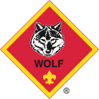
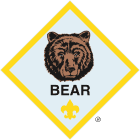

From Lion to Arrow of Light
Each rank is designed specifically for that grade level — adventures, badge work, and skills grow as scouts do. Click any rank to learn more on the official BSA website.
🦁 Lion
The Lion rank welcomes Kindergartners into Scouting with simple, hands-on adventures that introduce core values of respect, responsibility, and outdoor fun — always with a parent or guardian partner.
- Meet your den and make new friends
- Explore nature and the outdoors
- Learn about community helpers
- Complete fun family adventures

Kindergarten
Parent partner program

1st Grade
Go see it adventures
🐯 Tiger
Tigers "Go See It" — exploring their community, meeting local heroes, and learning about the world around them. Each adventure is shared with a family partner making memories together.
- Community field trip adventures
- Basic outdoor skills introduction
- Team games and activities
- Citizenship and helping others
🐺 Wolf
Wolf Scouts build independence and begin taking on greater responsibility. They explore topics from first aid to citizenship to STEM — all through engaging, age-appropriate adventures.
- Introduction to first aid basics
- STEM and science adventures
- Fitness and healthy habits
- Citizenship projects in Livermore

2nd Grade
Growing independence

3rd Grade
Outdoor skills & leadership
🐻 Bear
Bear Scouts dig deeper — taking on bigger challenges in outdoor skills, leadership, and community engagement. They begin leading within their dens and taking on more complex adventure projects.
- Camping and outdoor cooking skills
- American heritage and citizenship
- Entrepreneurship and money basics
- Sports and physical fitness
⚜️ Webelos
Webelos stands for We Be Loyally Obedient Scouts. This rank bridges Cub Scouts toward Boy Scouts — with more independent camping, advanced badge work, and real leadership opportunities.
- Independent camping (without parents)
- Advanced first aid and safety
- Activity badges across many skill areas
- Introduction to Boy Scout skills

4th Grade
Bridge to Boy Scouts

5th Grade
Highest Cub Scout rank
🏹 Arrow of Light
The Arrow of Light is the highest rank in Cub Scouting and the only badge that can be worn on the Boy Scout uniform. Earning it is a major achievement and sets scouts up perfectly for the Scouts BSA program.
- Highest honor in Cub Scouting
- Leadership and community service projects
- Formal crossover ceremony into Scouts BSA
- Arrow of Light badge worn for life
Start Your Scout Journey Today
Every scout starts at the rank for their current grade. No experience needed — just show up ready to learn!